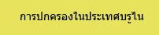

|  |
|---|
การเมืองการปกครองของประเทศบรูไน
ธงชาติบรูไน ดารุสซาลาม
บรูไนแบ่งการปกครองออกเป็น 4 อำเภอ คือ
1. Belait
เป็นอำเภอที่ใหญ่ที่สุดของบรูไน เป็นอำเภอที่อยู่ทางทิศตะวันตกของประเทศบรูไน มีเมืองเอกชื่อว่า Kuala Belait เมืองอื่นๆที่มีชื่อเช่น Badas, Kerangan, Nyatan, Labi, Lumut, Seria, Sukang และ Talingan อำเภอนี้มีดินแดนทางทิศเหนือติดทะเลจีนใต้ ทางทิศตะวันออกติดกับอำเภอ Tutang และทางทิศใต้และทิศตะวันตกติดกับประเทศมาเลเซีย
2. Brunei และ Muara
เป็นอำเภอที่เล็กที่สุดของประเทศบรูไน ตั้งอยู่ทางเหนือสุดของประเทศ มีเมืองเอกชื่อว่า Bandar Seri Begawan ซึ่งเป็นเมืองหลวงของประเทศบรูไนด้วย เมืองที่สำคัญมีเมือง Muara อำเภอนี้มีดินแดนทางทิศเหนือติดกับทะเลจีนไต้ ทางทิศตะวันออกติดกับแหลมหรือ อ่าวบรูไน ทางทิศไต้ติดกับประเทศมาเลเซีย และทิศตะวันตกติดกับ Tutong และที่อ่าวบรูไนมีเกาะอีกหลายเกาะตั้งอยู่
3. Temburong
เป็นอำเภอที่ตั้งอยู่ทางตะวันออกสุดของประเทศบรูไน อำเภอ Temburong เป็นอำเภอที่ค่อนข้างแปลก เพราะอำเภอนี้ถูกตัดขาดจากดินแดนของประเทศบรูไนมีเพียงอ่าวบรูไนเท่านั้นเป็นตัวเชื่อมระหว่างอำเภอ Temburong กับส่วนอื่นๆของประเทศบรูไน ดังนั้นเมื่อประชาชนประเทศบรูไนจากอำเภอ Temburong จะเดินทางไปยังอำเภออื่นๆของประเทศบรูไน จึงมีทางเดียวเท่านั้นที่เป็นดินแดนเดียวกัน นั้นคือการเดินทางทางทะเล โดยผ่านอ่าวบรูไน ส่วนการเดินทางทางบกนั้นจำเป็นต้องผ่านดินแดนของประเทศมาเลเซียส่วนที่เรียกว่า Limbang ดังนั้นประชาชนชาวบรูไนจากอำเภอ Temburong ที่ต้องการเดินทางไปยังส่วนอื่นๆของบรูไนโดยผ่านLimbang จึงต้องใช้ Pasport ในการเดินทางดังกล่าว
4. Tutong
เป็นอำเภอหนึ่งของประเทศบรูไน มีเมืองเอกชื่อว่า Tutong ส่วนเมืองที่สำคัญอื่นๆเช่น Kuala Abang , Lamunin, Melit, Penanjong และTelisai อำเภอนี้มีเพื้นที่ทางทิศเหนือติดกับทะเลจีนใต้ ทางทิศตะวันออกกับอำเภอBrunei และMuara รวมทั้งประเทศมาเลเซีย ส่วนทางทิศตะวันตกติดกับอำเภอ Belait
คณะรัฐมนตรีของประเทศบรูไน
สุลต่านฮัสซันนัลบอเกียะห์ เป็นผู้นำของประเทศบรูไน ยังมีตำแหน่งอีก 3 ตำแหน่งคือ นายกรัฐมนตรี, รัฐมนตรีว่าการกระทรวงกลาโหม และรัฐมนตรีกระทรวงการคลัง นอกจากนั้นตำแหน่งในคณะรัฐมนตรีของบรูไนดังนี้
- รัฐมนตรีอาวุโส ประจำสำนักนายกรัฐมนตรี คือ Pengiran Muda Haji Al –Muhtadee Billah องค์รัชทายาทของสุลต่านแห่งประเทศบรูไน
- รัฐมนตรีว่าการกระทรวงต่างประเทศ
- รัฐมนตรีว่าการกระทรวงศึกษาธิการ
- รัฐมนตรีว่าการกระทรวงศาสนา
- รัฐมนตรีว่าการกระทรวงศาสนา
- รัฐมนตรีว่าการกระทรวงอุตสาหกรรมและทรัพยากรพื้นฐาน
- รัฐมนตรีว่าการกระทรวงคมนาคม - รัฐมนตรีว่าการกระทรวงมหาดไทย
- รัฐมนตรีว่าการกระทรวงสาธารณสุข
- รัฐมนตรีว่าการกระทรวงการพัฒนา
- รัฐมนตรีว่าการกระทรวงวัฒนธรรม ,เยาวชน และการกีฬา
- รัฐมนตรีว่าการพลังงานประจำสำนักนายกรัฐมนตรี
- รัฐมนตรีว่าการกระทรวงคลังคนที่ 2
รัฐธรรมนูญของประเทศบรูไน
ประเทศบรูไนมีการใช้รัฐธรรมนูญตั้งแตปี 1959 และรัฐธรรมนูญฉบับดังกล่าวมีการแก้ไขในปี 1971 และปี 1984 โดยรัฐธรรมนูญฉบับปี 1959 ได้กำหนดให้สุลต่านเป็นผูนำของรัฐโดยมีอำนาจสมบูรณ์ องค์สุลต่านมีผู้ช่วยและผู้ให้คำปรึกษาโดย 5 สภา คือสภา ศาสนา (The Religious Council) สภาที่ปรึกษา( The Privy Council) สภารัฐมนตรี ( The Council of Ministers ), สภานิติบัญญัติ ( The Legislatif Council ) และสภาที่เรียกว่า The Council of Succession ซึ่งทำหน้าที่ในการเลือกสุลต่านองค์ใหม่ และภาระกิจอื่นๆ ตามรัฐธรรมนูญฉบับ 1959 นั้นกำหนดให้นายกรัฐมนตรีเป็นตำแหน่งสูงในฝ่ายบริหาร โดยมีที่ปรึกษาชาวอังกฤษผู้มีตำแหน่งเป็น British High Commissioner ให้คำปรึกษาในกิจการต่างๆยกเว้นกิจการเกี่ยวกับศาสนา และขนบธรรมเนียมประเพณีของชาวมลายู ต่อมามีการแก้ไขรัฐธรรมนูญ ในปี 1971 โดยอังกฤษมีอำนาจในการต่างประเทศ ส่วนกิจการความมั่นคงการป้องกันประเทศอยู่ในความรับผิดชอบของประเทศบรูไนและอังกฤษ และมีการแก้ไขรัฐธรรมนูญอีกครั้งเมื่อประเทศบรูไนได้รับเอกราช เมื่อ 1 มกราคม 1984 โดยในปีดังกล่าวสุลต่านได้เข้ารับตำแหน่งนายกรัฐมนตรี , รัฐมนตรีว่าการกระทรวงการคลัง,และรัฐมนตรีว่าการกระทรวงมหาดไทย ต่อมาเมื่อ ตุลาคม 1986 สุลต่านได้ลาออกจากตำแหน่งรัฐมนตรีว่าการกระทรวงกลาโหม ตามรัฐธรรมนูญ 1959 การแต่งตั้งสมาชิกของสภาต่างๆ เป็นอำนาจของสุลต่าน โดยสภาศาสนาให้คำปรึกษาเกี่ยวกับกิจการศาสนาอิสลาม สภาที่ปรึกษา (องคมนตรี ) ให้คำปรึกษาเกี่ยวกับกิจการต่างๆตามรัฐธรรมนูญ สภานินติบัญญัติให้คำปรึกษาเพื่อให้รัฐธรรมนูญได้รับการปฏิบัติตามวัตถุประสงค์ แต่ความจริงแล้วสภานิติบัญญัติไม่มีการประชุมมาเป็นเวลาหลายปีแล้ว
พรรคการเมือง
จนถึงปัจจุบันประเทศบรูไนพรรคการเมืองยังไม่ค่อยมีบทบาทมากนัก จนสามารถเรียกได้ว่าพรรคการเมืองของประเทศบรูไนไม่มีผลต่อการเมืองการปกครองของประเทศบรูไนเลย ในประเทศบรูไนจะมีเพียงพรรคการเมืองเล็กๆพรรคหนึ่งซึ่งแทบจะไม่มีบทบาททางการเมือง หรือทำกิจกรรมทางการเมืองในประเทศบรูไน พรรคดังกล่าวคือพรรคจิตสำนึกประชาชนบรูไน ( Parti Kesedaran Rakyat Brunei ) หรือ PAKAR และพรรคเอกภาพแห่งชาติบรูไน ( Parti Perpaduan Kebangsaan Brunei ) หรือ PPKB ซึ่งได้รับอนุญาตให้ดำเนินกิจกรรมทางการเมืองเมื่อไม่นานมานี้เอง.
ระบบศาลยุติธรรมของประเทศบรูไน
Mahkamah Besar Brunei Darussalam ศาลสูงสุดบรูไนดารุสสาลาม ได้มีการจัดตั้งขึ้นในปี 1963 ภายหลังจากที่มีการยุบศาลสูงสุดที่เรียกว่า Mahkamah Besar Sarawak, North Borneo dan Brunei เมื่อครั้งที่รัฐซาราวัคและรัฐซาบะห์ได้เข้าร่วมกับมาลายาและสิงคโปร์ในการจัดตั้งประเทศมาเลเซียในปี 1963
ในประเทศบรูได้มีหน่วยงานที่เรียกว่า Jabatan Kehakiman หรือ กรมศาลยุติธรรม ซึ่งเป็นหน่วยงานที่ทำหน้าที่ในการตัดสินคดีความโดยผ่าน ศาล Mahkamah Perantaraan, ศาล Mahkamah Tinggi, ศาล Mahkamah Mahkamah Rayuan, และ ศาล Mahkamah Majestret โดยศาลทุกศาลจะมีการว่าความกันที่ศาลในเมือง Bandar Seri Begawan, Kuala Belait, Tutong และ Temburong หน่วยงานที่เรียกว่า Jabatan Kehakiman นั้นนอกจากทำหน้าที่ดูแลศาลต่างๆแล้ว ยังเป็นหน่วยงานที่สำหรับยื่นเรื่องขอทำหนังสือพินัยกรรม รวมทั้งดำเนินการเกี่ยวกับมรดกของผู้ที่เสียชีวิต รวมทั้งการเป็นสถานที่ดำเนินการรับรองการเป็นทนายความ
ศาลทั้งหมดจะตัดสินคดีที่เกี่ยวข้องกับคดีอาญาและคดีแพ่ง ส่วนใหญ่ของคดีจะดำเนินการที่ศาล Majistret จะมีเพียงคดีที่นอกเหนือจากอำนาจของศาล Majistret ก็จะมีการว่าความที่ศาลที่เรียกว่า Mahkamah Perantaraan และ ศาลที่เรียกว่า Mahkamah Tinggi
คำอุธรณ์จากศาล Majistret จะไปตัดสินในศาล Mahkamah Tinggi ส่วนคำอุธรณ์จากศาล Mahkamah Perantaraan และ ศาล Mahkamah Tinggi จะไปตัดสินในศาล Mahkamah Rayuan
ศาล Mahkamah Rayuan ถือเป็นศาลสูงสุดในคดีความที่เกี่ยวข้องกับคดีอาญา ส่วนคดีความที่เกี่ยวข้องกับคดีแพ่งนั้นในกรณีทุกฝ่ายยินยอมสามารถยื่นคำอุธรณ์ต่อศาลที่เรียกว่า Privy Council ซึ่งตั้งอยู่ในประเทศอังกฤษ แต่ก่อนที่จะยื่นอุธรณ์ต่อ Privy Council นั้นต้องมีการยื่นเรื่องต่อศาล Mahkamah Rayuan ก่อน นอกจากนั้นศาล Mahkamah Tinggi ยังมีอำนาจในการตัดสินคดีที่เกี่ยวกับการล้มละลายและการเลิก